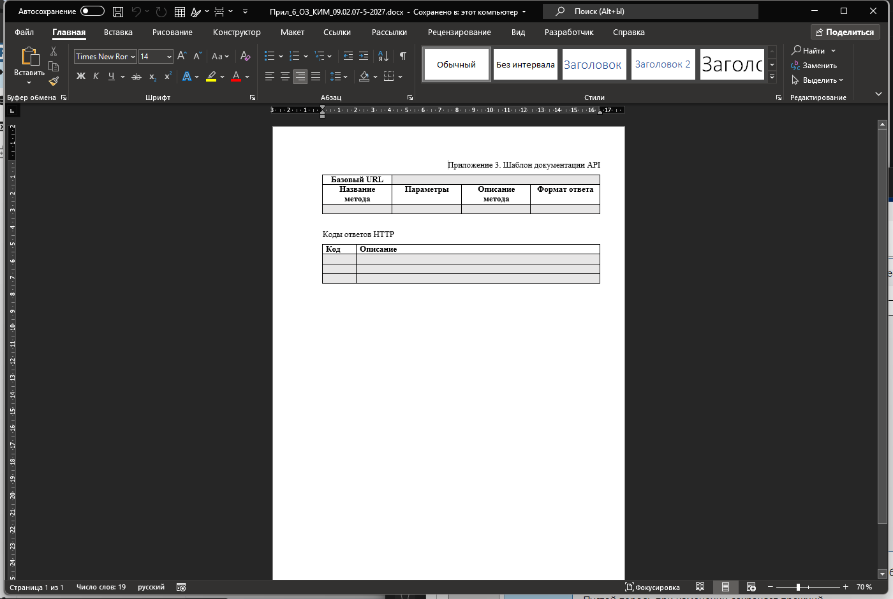
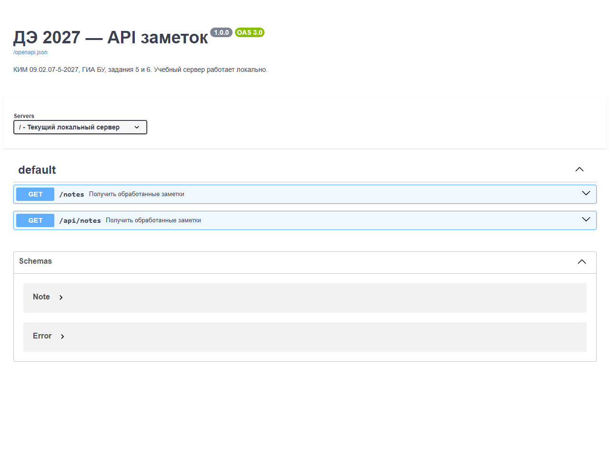
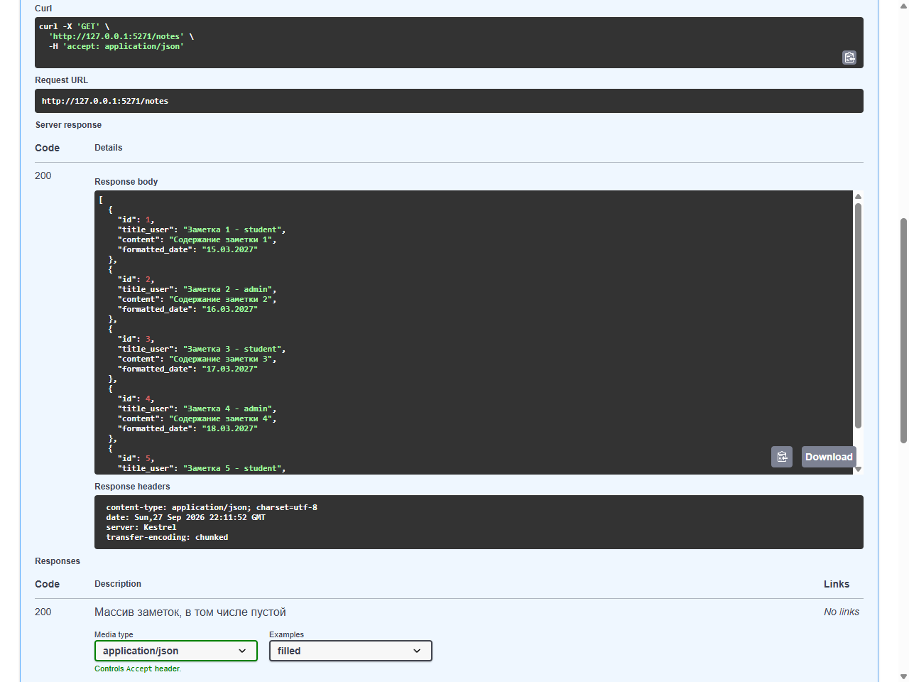
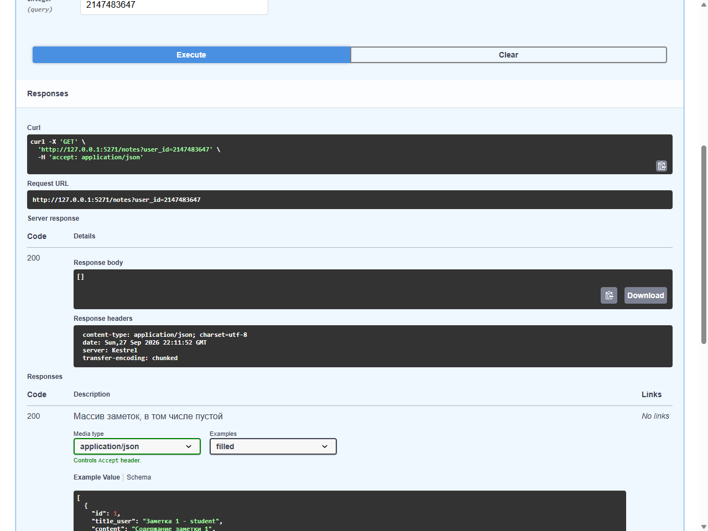
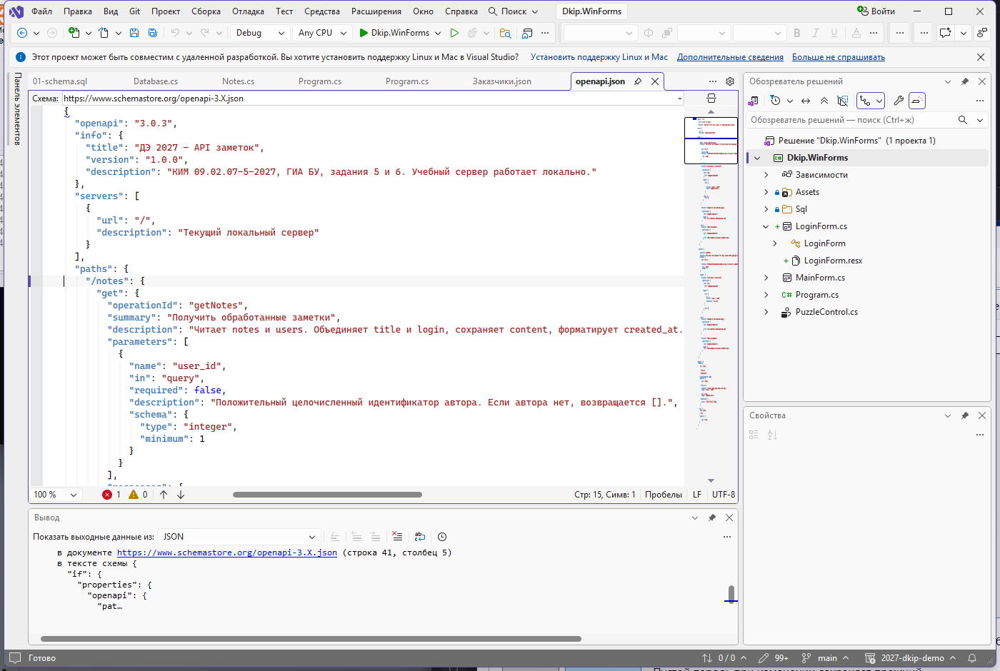
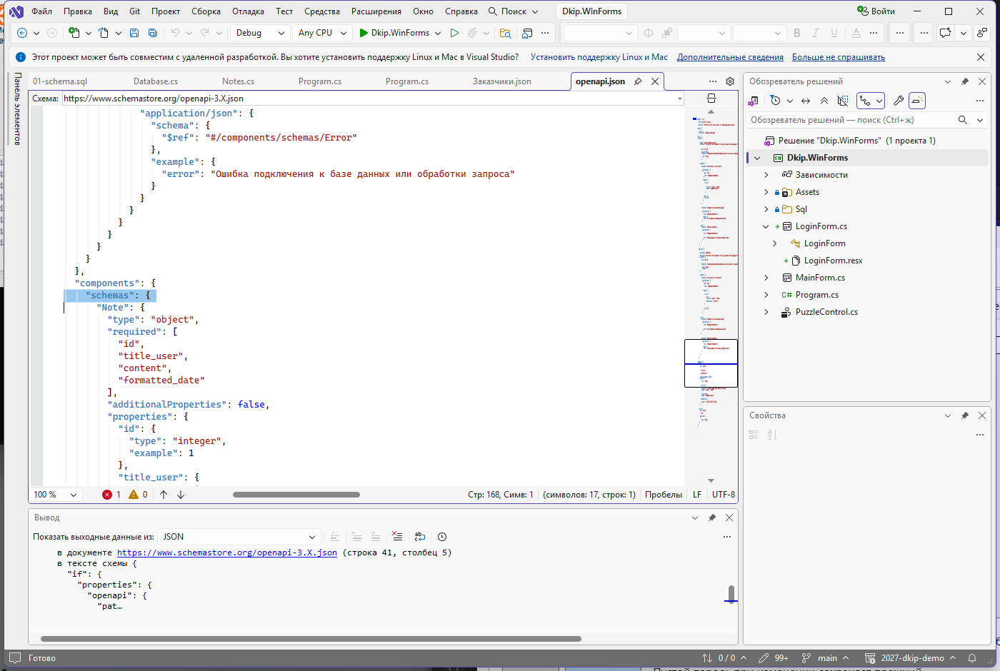
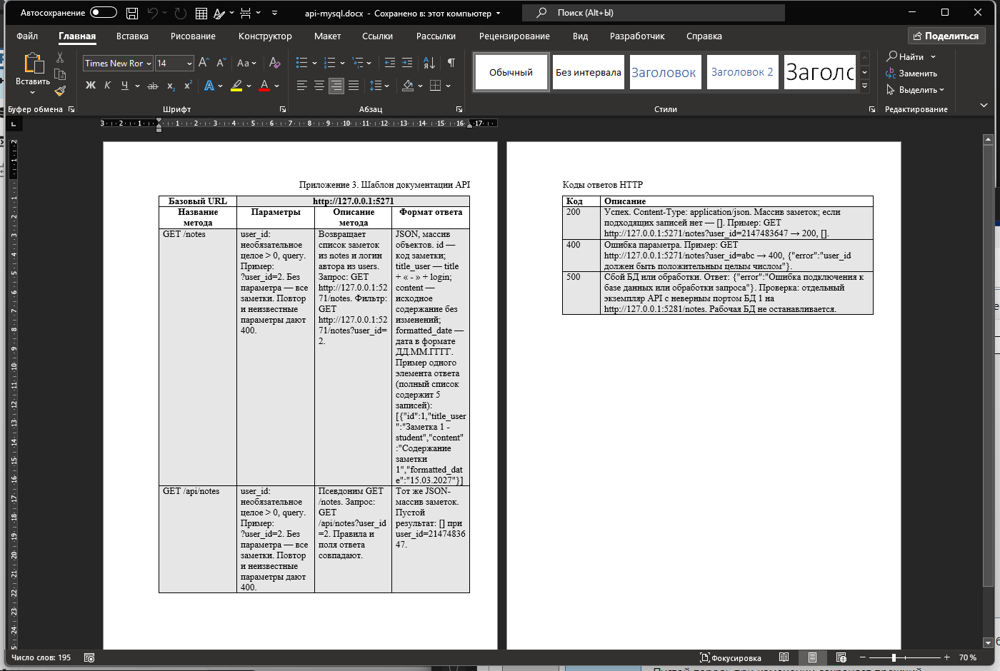

01Что требуется
Нужно оформить документацию на тот API, который вы сделали в предыдущем задании. Результат это заполненный файл Word, а не сайт, не презентация и не набор скриншотов. Форма сдачи задана шаблоном, и эксперт сверяет документ именно с ним.
Шаблон лежит в папке материалов: API_документ_шаблон.docx. В нём три части.
- Строка «Базовый URL» с пустой ячейкой справа.
- Таблица методов с четырьмя столбцами: «Название метода», «Параметры», «Описание метода», «Формат ответа».
- Таблица «Коды ответов HTTP» с двумя столбцами: «Код» и «Описание».
Структуру менять нельзя. Строки не удаляют, столбцы не переименовывают, заголовок приложения не переписывают. Если методов больше, чем строк в таблице, добавляют строки. Если параметров несколько, их перечисляют в одной ячейке.
Заполнить нужно всё перечисленное.
- Базовый URL с портом, на котором работает сервис.
- Все методы, которые сервис действительно принимает.
- Для каждого параметра имя, расположение, тип, обязательность и ограничение.
- Описание метода: что он возвращает и откуда берутся данные.
- Формат ответа: имена полей, типы и происхождение вычисляемых значений.
- Коды 200, 400 и 500 с условием возникновения и примером тела.
- Примеры запросов и ответов, взятые из работающего сервиса.
Сдаются три файла: API_документация_Фамилия.docx, файл openapi.json и папка examples с сохранёнными ответами. Документ должен позволить другому человеку повторить запрос, не открывая исходный код.
Главное требование звучит строже, чем кажется: документ описывает тот сервис, который работает на вашем компьютере сейчас. Пример, придуманный по памяти, расходится с ответом на первом же поле, и тогда непонятно, чему верить: документу или программе.
02Что понадобится
Работа начинается не с Word, а с запущенного API. Пока сервис не отвечает, заполнять документ нечем: любой пример придётся выдумывать.
| Что открыть | Где найти | Зачем |
|---|---|---|
| Microsoft Word | Пуск, затем Word | Заполнить шаблон и сохранить DOCX |
| Шаблон | reports/API_документ_шаблон.docx |
Исходная форма документа |
| Проект API | Папка задания 5 | Источник фактического поведения |
| PowerShell | Пуск, затем Windows PowerShell | Запуск сервера |
| Swagger UI | http://127.0.0.1:5271/swagger/ |
Проверить запросы нажатием кнопки |
openapi.json |
http://127.0.0.1:5271/openapi.json или reports/openapi.json |
Машиночитаемое описание контракта |
| Браузер | Ярлык на рабочем столе | Быстрый запрос и просмотр JSON |
| Postman | Пуск, затем Postman | Ответ 400, который не отправляется из формы Swagger |
notes.csv |
reports/variants/V01/notes.csv |
Сверка заголовков, текстов и дат |
Шаблон скачайте или откройте из папки курса. Рядом лежит пример описания OpenAPI: openapi.json. Он описывает те же два пути, которые разбираются ниже, и помогает понять структуру файла.
Проверьте стенд перед работой.
- MySQL запущен в XAMPP, статус
Running. - Проект API собирается командой
dotnet buildбез ошибок. - Сервис отвечает на
http://127.0.0.1:5271/notes. - Страница
http://127.0.0.1:5271/swagger/открывается и показывает список путей. - Word открывает шаблон, а жёлтая полоса защищённого просмотра снимается кнопкой
Разрешить редактирование.
Если Swagger UI не открывается, документ всё равно можно заполнить, но проверять примеры придётся вручную через браузер и Postman. Это медленнее и повышает риск расхождения.
03Как устроено задание
Один контракт живёт в трёх местах. Код задаёт фактическое поведение: какие адреса принимаются, какие поля возвращаются, какие коды возможны. Файл openapi.json фиксирует то же самое в машиночитаемом виде. Swagger UI читает этот файл и показывает человеку, а заодно позволяет отправить настоящий запрос. Заполненный DOCX переводит контракт на язык шаблона.
Расхождение между этими источниками это дефект, а не особенность оформления. Если в документе написан путь, которого нет в коде, читатель получит 404. Если в коде есть путь, которого нет в документе, эксперт найдёт неописанный метод. Поэтому работа идёт в одном направлении: сначала запрос, потом документ, потом сверка.
Разберём шаблон по частям.
Базовый URL. Это общая начальная часть адреса: схема, хост и порт. Для учебного сервиса он выглядит так: http://127.0.0.1:5271. Путь метода сюда не входит. Запись http://127.0.0.1:5271/notes это уже полный адрес запроса. Если поставить путь в базовый URL, читатель сложит его с путём из таблицы и получит /notes/notes.
Таблица методов. Одна строка описывает один работающий маршрут. В первом столбце пишут и метод, и путь: GET /notes. Запись GET без пути бессмысленна, читатель не знает, куда обращаться. Запись /notes без метода тоже неполна.
Параметры. У сервиса заметок параметр один: user_id. Для него указывают пять сведений.
| Свойство | Значение |
|---|---|
| Имя | user_id |
| Расположение | query, то есть после вопросительного знака |
| Тип | целое число |
| Обязательность | нет |
| Ограничение | не меньше 1 |
Без параметра сервис возвращает все заметки. С параметром только записи указанного автора. Если автора с таким номером нет, ответ остаётся успешным, а список пустым.
Формат ответа. Сервер возвращает массив объектов JSON. В каждом объекте ровно четыре поля.
| Поле | Тип | Откуда берётся |
|---|---|---|
id |
число | Столбец id таблицы notes |
title_user |
строка | Заголовок, дефис с пробелами, логин автора |
content |
строка | Текст заметки без изменений |
formatted_date |
строка | Дата создания в формате ДД.ММ.ГГГГ |
Два поля вычисляются при выдаче. В таблице базы их нет, и это обязательно отмечают в документе. Иначе читатель ищет title_user в схеме таблицы и не находит.
Коды ответов. В шаблоне три строки, и все три обязательны.
| Код | Когда возникает | Тело |
|---|---|---|
| 200 | Запрос обработан, массив заметок, в том числе пустой | Массив объектов или [] |
| 400 | Параметр неверен: не число, ноль, повтор, неизвестное имя | Объект с полем error |
| 500 | Сбой базы данных или обработки | Объект с полем error |
Код 200 означает успех, а не наличие данных. Пустой массив это нормальный ответ на корректный запрос. Код 404 означал бы, что ресурса /notes не существует, и это неправда: ресурс есть, он ответил.
Теперь про OpenAPI. Файл состоит из пяти верхних разделов, и каждый связан с частью документа.
| Раздел OpenAPI | Что содержит | Куда переносится в DOCX |
|---|---|---|
openapi |
Версия формата, например 3.0.3 | Никуда, это служебное поле |
info |
Название и версия сервиса | В заголовок и подпись документа |
servers |
Адрес сервера | В строку «Базовый URL» |
paths |
Пути, методы, параметры, ответы | В таблицу методов и коды |
components.schemas |
Схемы заметки и ошибки | В описание формата ответа |
Внутри пути ключ get описывает одну операцию. У неё есть summary с коротким названием, parameters со списком параметров и responses с кодами. Каждый код содержит описание и тип содержимого. Запись $ref это ссылка на схему в том же файле, она избавляет от копирования одинакового описания.
Схема заметки перечисляет обязательные поля и запрещает дополнительные свойства. Это не украшение: если сервис однажды добавит поле, контракт разойдётся со схемой, и проверка это покажет. У схемы ошибки одно обязательное поле error. В готовом примере эти схемы называются Note и Error, но имя может отличаться: важен набор полей, а не название.
04Пошаговая инструкция
Дальше идём по порядку. Сначала документ и запущенный сервис, потом заполнение, потом сверка.
Шаг 1. Откройте шаблон и сохраните копию
Запустите Word. Нажмите Файл, затем Открыть, затем Обзор и укажите файл reports/API_документ_шаблон.docx. Если Word показывает жёлтую полосу Защищённый просмотр, нажмите Разрешить редактирование.
Сразу сохраните копию под своим именем. Нажмите Файл, затем Сохранить как, выберите Этот компьютер, укажите папку работы. В поле Имя файла введите API_документация_Фамилия.docx, в поле Тип файла оставьте Документ Word (*.docx) и нажмите Сохранить.
Оригинал шаблона не редактируйте. Если копия испорчена, структуру придётся восстанавливать по памяти, а эксперт сверяет документ именно с приложением. Формат PDF для сдачи не подходит: в нём нельзя проверить структуру и текст.

Шаг 2. Разберите шаблон по частям
Прочитайте шаблон целиком, не заполняя. Найдите строку «Базовый URL» и пустую ячейку справа от неё. Ниже найдите таблицу методов и посчитайте столбцы: их четыре. Внизу найдите таблицу кодов с двумя столбцами.
Обратите внимание на стили. Заголовок приложения оформлен стилем Заголовок 1, названия таблиц стилем Заголовок 2, обычный текст стилем Обычный. Эти стили видны в галерее на вкладке Главная. Если поставить курсор в заголовок, в галерее подсветится Заголовок 1. Так Word показывает, какой стиль применён.
Стили нужны не для красоты. По ним Word строит оглавление и навигацию, а эксперт видит структуру документа. Не заменяйте стиль вручную подобранным размером шрифта: внешне похоже, но структура потеряна.
Шаг 3. Запустите API и проверьте адрес
Откройте PowerShell в папке проекта API. Задайте подключение и запустите сервис.
$env:DKIP_CONNECTION='Server=127.0.0.1;Database=dkip2027_course;User ID=root;Password=;Character Set=utf8mb4'
dotnet run --urls http://127.0.0.1:5271
Дождитесь строки Now listening on: http://127.0.0.1:5271. Окно не закрывайте. Во втором окне проверьте адрес:
curl.exe -s -i "http://127.0.0.1:5271/notes"
В ответе должны быть строка состояния HTTP/1.1 200 OK, заголовок Content-Type: application/json и массив заметок. Если пришёл код 500, смотрите консоль сервера: чаще всего неверно имя базы или не запущен MySQL.
Запишите фактический адрес и порт на листок. Дальше он понадобится в трёх местах: в документе, в командах проверки и в коллекции Postman. Порт живёт в трёх местах одновременно, и при смене его нужно поменять везде.
Шаг 4. Соберите реальные ответы
Выполните четыре запроса и сохраните тела в папку examples. Первый возвращает все заметки, второй только записи автора, третий пустой результат, четвёртый ошибку параметра.
New-Item -ItemType Directory -Force .\examples | Out-Null
$base = "http://127.0.0.1:5271"
curl.exe -s "$base/notes" -o .\examples\notes-200.json
curl.exe -s "$base/notes?user_id=2" -o .\examples\notes-filter.json
curl.exe -s "$base/notes?user_id=2147483647" -o .\examples\notes-empty.json
curl.exe -s -i "$base/notes?user_id=abc" -o .\examples\notes-400.txt
Проверьте каждый файл в редакторе, а не только код ответа. В первом должно быть столько объектов, сколько строк в таблице notes. Во втором только записи выбранного автора. В третьем ровно []. В четвёртом код 400 и объект с полем error.
Ошибку 500 сохраните отдельно, чтобы не останавливать рабочий сервис. Во втором окне PowerShell задайте неверный порт базы и другой порт API.
$env:DKIP_CONNECTION='Server=127.0.0.1;Port=1;Database=dkip2027_course;User ID=demo;Connection Timeout=1'
dotnet run --urls http://127.0.0.1:5281
В третьем окне выполните curl.exe -s -i "http://127.0.0.1:5281/notes" -o ./examples/notes-500.txt. В файле должны быть код 500 и объект {"error": "..."} без строки подключения и трассировки. После проверки закройте только тестовый процесс.
Шаг 5. Заполните базовый URL
Вернитесь в Word. Щёлкните по пустой ячейке справа от надписи «Базовый URL» и введите http://127.0.0.1:5271. Проверьте, что путь /notes в ячейку не попал.
Порт должен совпадать с тем, что показывает консоль сервера. Если вы запускали API на другом порту, впишите его. Локальный адрес действует только на вашем компьютере, поэтому рядом полезно добавить короткую пометку, что адрес относится к учебному стенду.
Если ячейка узкая и адрес переносится на две строки, это не ошибка. Чтобы адрес не разрывался, поставьте курсор в ячейку и уменьшите размер шрифта до 10 или расширьте столбец, потянув границу мышью.
Шаг 6. Заполните таблицу методов
Поставьте курсор в первую строку таблицы методов и заполните четыре ячейки.
| Столбец | Что вписать для первого маршрута |
|---|---|
| Название метода | GET /notes |
| Параметры | user_id, необязательное целое число от 1, передаётся в query |
| Описание метода | Возвращает список заметок; с параметром только записи выбранного автора |
| Формат ответа | JSON, массив объектов: id, title_user, content, formatted_date |
Если сервис отвечает и на /api/notes, добавьте вторую строку. Нажмите правой кнопкой в последней ячейке таблицы и выберите Вставить, затем Вставить строки ниже. В новой строке опишите второй маршрут и укажите, что результат такой же.
Можно добавить строку клавишей Tab в последней ячейке: Word создаст новую строку автоматически. Это быстрее, чем искать меню.
Если строк в шаблоне больше, чем маршрутов, оставьте лишние пустыми. Структуру без необходимости не меняйте.
Шаг 7. Опишите параметр
В ячейке «Параметры» недостаточно написать «есть параметр user_id». Читатель должен понять, можно ли его пропустить и какие значения допустимы. Полная формулировка занимает две строки и выглядит так.
user_id: query, целое число, необязательный, не меньше 1.
Без параметра возвращаются все заметки.
Проверьте по Swagger UI, что тип и обязательность совпадают. Откройте http://127.0.0.1:5271/swagger/, раскройте GET /notes и найдите блок Parameters. Если user_id там есть, сверьте query, integer, required: false и минимум 1.
В минимальном API параметр иногда читается из HttpRequest целиком, и тогда Swagger UI не показывает его в форме. Это не ошибка сервиса, но ошибка описания: в openapi.json параметр всё равно должен быть. Если блока Parameters нет, проверьте параметр в адресной строке браузера, а в файле описания добавьте его вручную по образцу reports/openapi.json.
Если в вашем сервисе параметра нет, не описывайте его. Правило простое: описанный параметр должен работать, а работающий параметр должен быть описан. Параметр в документе, который сервис молча игнорирует, хуже отсутствующего: клиент уверен, что фильтр применился.
Шаг 8. Опишите формат ответа и вставьте JSON
В ячейке «Формат ответа» перечислите четыре поля и объясните происхождение двух вычисляемых. Одного слова «JSON» мало.
JSON, массив объектов.
id: целое число, идентификатор заметки.
title_user: строка, заголовок, дефис с пробелами, логин автора.
content: строка, текст заметки без изменений.
formatted_date: строка, дата в формате ДД.ММ.ГГГГ.
title_user и formatted_date вычисляются при выдаче.
Ниже таблицы вставьте пример одного элемента. Откройте examples\notes-200.json, выделите один объект вместе с фигурными скобками, скопируйте и вставьте в документ как обычный текст. В Word используйте Главная, затем Вставить, затем Сохранить только текст, чтобы не принести чужое форматирование.
Выделите вставленный JSON и задайте шрифт Consolas, размер 9 или 10. Такой шрифт делает отступы и кавычки читаемыми. Не вставляйте JSON картинкой: его нельзя скопировать, и проверить текст не получится. Не используйте Вставка, затем Объект: для текста это лишний шаг.
[
{
"id": 1,
"title_user": "Заказ принят - manager",
"content": "Заказ V01-01: Фартук поварской, 12 ед.; срок 22.03.2027.",
"formatted_date": "16.03.2027"
}
]
Один объект достаточно, но рядом пометьте, что полный список содержит пять заметок. Сокращать пример до {...} нельзя: читатель должен увидеть имена полей и формат даты.
Отдельная тонкость Word: программа любит заменять прямые кавычки на парные. В JSON нужны прямые. Если кавычки изменились, отключите замену: Файл, затем Параметры, затем Правописание, затем Параметры автозамены, вкладка Автоформат, снимите галочку с замены прямых кавычек на парные. После этого вставьте пример заново.
Шаг 9. Заполните коды ответов
В нижней таблице заполните три строки. Для каждого кода укажите условие и пример тела.
| Код | Что записать в описание |
|---|---|
| 200 | Успех. Массив заметок, в том числе пустой. Пример: GET /notes?user_id=2147483647 даёт [] |
| 400 | Неверный параметр. Пример: GET /notes?user_id=abc даёт объект с полем error |
| 500 | Сбой базы или обработки. Пример: запрос к тестовому процессу с неверным портом базы |
Пустой массив относится к коду 200, а не к 404. Запрос корректен, ресурс существует, подходящих записей нет. Если записать пустой результат под 404, документ будет утверждать, что сервис теряет адрес при отсутствии данных.
Для 400 и 500 приведите тело целиком и условие воспроизведения.
{"error": "user_id должен быть положительным целым числом"}
Без условия воспроизведения читатель не сможет повторить ошибку и решит, что пример выдуман. Проверьте, что в документе нет пароля, строки подключения и полного текста исключения. Документация уходит в отчёт, и сведения о подключении туда попадать не должны.
Шаг 10. Проверьте API в Swagger UI
Откройте http://127.0.0.1:5271/swagger/. В заголовке видно название сервиса и версию, ниже список путей. Если страница пишет Failed to load API definition, файл описания не найден или содержит синтаксическую ошибку.

Раскройте строку GET /notes. Появится описание операции и таблица ответов. Блок параметров появится, если параметр описан в OpenAPI. Этот блок удобно читать перед заполнением документа: он собран из того же файла, который вы правите.
Нажмите Try it out. Поля станут доступны для ввода. Оставьте user_id пустым и нажмите Execute. Прокрутите до раздела Server response. Там будут Request URL, Code и Response body.

Сравните число объектов с числом строк в таблице notes. Это простая проверка, что сервис не теряет записи. Затем введите 2147483647 в поле user_id и нажмите Execute снова. Ответом будет код 200 и тело [].

У формы Swagger есть ограничение. Она проверяет тип значения до отправки, поэтому abc в поле числа не отправится, а подсветится как ошибка. Настоящий ответ 400 получают через адресную строку браузера или Postman. В документе описывают фактический код, а не поведение формы.
Шаг 11. Откройте OpenAPI JSON и сверьте разделы
Введите в браузере http://127.0.0.1:5271/openapi.json. Если сервис не отдаёт файл, откройте reports/openapi.json как образец и сравните структуру со своим описанием.

Пройдите по разделам и проверьте пять пунктов.
openapiсодержит версию формата, например3.0.3.infoсодержит название и версию сервиса.serversсодержит адрес. В учебном примере стоит/, потому что страница и файл отдаются тем же сервером. В DOCX всё равно нужен полный адрес с портом.pathsсодержит все пути, которые сервис принимает. Внутри пути ключgetописывает операцию.components.schemasсодержит схему заметки с четырьмя обязательными полями и схему ошибки с полемerror. В готовом примере они называютсяNoteиError, в вашем файле имена могут отличаться.

Внутри responses проверьте три кода. У 200 схема должна быть массивом со ссылкой на схему заметки, а в примерах полезно иметь два значения: заполненный список и пустой массив. У 400 и 500 схема ссылается на схему ошибки, а пример содержит поле error.
Если расхождение найдено, есть два честных решения. Документ устарел, и его исправляют. Сервис ведёт себя не так, как требует задание, и тогда дефект описывают в отчёте. Третьего варианта, «пример приблизительный», не существует.
Шаг 12. Сверьте документ с фактическим API
Сверка идёт по шести пунктам, и каждый проверяется запросом, а не памятью. Заполните таблицу на черновике, а затем перенесите вывод в отчёт.
| Что сверять | Где смотреть | Признак расхождения |
|---|---|---|
| Пути и методы | paths в OpenAPI, список в Swagger |
В документе путь, которого нет в коде |
| Параметры | обработчик, форма Swagger | Тип или обязательность не совпадают |
| Код 200 и пустой массив | ответ на user_id=2147483647 |
В документе пустой ответ отнесён к 404 |
| Код 400 | ответ на user_id=abc |
В документе нет 400 или нет поля error |
| Код 500 | ответ тестового процесса | В документе 500 без условия воспроизведения |
| Имена полей и дата | тело ответа | titleUser вместо title_user, дата в формате ISO |
Порядок такой. Сначала выполняют запросы и сохраняют ответы. Потом заполняют документ по сохранённым ответам. Затем открывают OpenAPI и проверяют, что те же пути, параметры и коды там есть. В конце читают документ глазами человека, который не видел проекта: сможет ли он повторить запрос.
Попросите соседа открыть ваш DOCX и назвать адрес и метод для получения заметок. Если он справляется без подсказок, документ готов. Если начинает искать код или спрашивает, где взять порт, значит, в документе не хватает сведений.
Шаг 13. Оформите и сохраните документ
Проверьте оформление по стилям, а не на глаз. Поставьте курсор в заголовок приложения: на вкладке Главная должен подсветиться Заголовок 1. Поставьте курсор в название таблицы: должен подсветиться Заголовок 2. Основной текст должен иметь стиль Обычный.
Если стиль сбился, выделите абзац и нажмите нужный стиль в галерее. Не подбирайте размер и жирность вручную: при следующем изменении структура снова разойдётся.
Проверьте таблицы. Все ячейки заполнены, текст не выходит за границы, столбцы не перекрываются. Если таблица шире страницы, выделите её, откройте вкладку Макет, затем Автоподбор, затем Автоподбор по окну.
Добавьте верхний колонтитул с фамилией и номером группы: Вставка, затем Верхний колонтитул, затем Изменить верхний колонтитул. Номер страницы ставится через Вставка, затем Номер страницы. Это не требование шаблона, но так документ не потеряется при печати.
Проверьте орфографию: вкладка Рецензирование, затем Правописание или клавиша F7. Ошибки в названиях полей Word не найдёт, их проверяют глазами по файлу notes-200.json.
Сохраните файл по Ctrl+S. Убедитесь, что имя заканчивается на .docx, а не на .doc. Старый формат может потерять часть оформления.

05Команды и приёмы, которые нужны чаще всего
| Команда или приём | Где выполнять | Что делает |
|---|---|---|
dotnet run --urls http://127.0.0.1:5271 |
PowerShell в папке API | Запускает сервис на нужном порту |
dotnet build |
Папка проекта | Проверяет сборку перед запуском |
curl.exe -s -i "http://127.0.0.1:5271/notes" |
PowerShell | Показывает заголовки и тело ответа |
http://127.0.0.1:5271/swagger/ |
Браузер | Открывает Swagger UI |
Try it out, затем Execute |
Swagger UI | Отправляет настоящий запрос |
http://127.0.0.1:5271/openapi.json |
Браузер | Показывает файл описания API |
Файл, затем Сохранить как |
Word | Создаёт копию под своим именем |
Главная, затем галерея стилей |
Word | Применяет Заголовок 1, Заголовок 2, Обычный |
Ctrl+Alt+1 и Ctrl+Alt+2 |
Word | Быстро применяет первый и второй заголовок |
Вставка, затем Таблица |
Word | Добавляет таблицу нужного размера |
Tab в последней ячейке |
Word | Добавляет новую строку таблицы |
Главная, затем Сохранить только текст |
Word | Вставляет JSON без чужого форматирования |
Шрифт Consolas, размер 9 |
Word | Делает код и JSON читаемыми |
Рецензирование, затем Правописание |
Word | Проверяет текст на ошибки |
06Частые ошибки
Путь внутри базового URL. В строке стоит http://127.0.0.1:5271/notes, и полный адрес удваивается. В базовом URL только схема, хост и порт.
Описан один путь из двух. Второй маршрут работает, но в документе его нет. Опишите все адреса, которые сервис принимает.
Параметр без типа и обязательности. Читатель не знает, можно ли его пропустить. Укажите имя, расположение, тип, обязательность и ограничение.
Пример из головы. Имена полей и даты не совпадают с ответом сервиса. Копируйте тело из notes-200.json, а не набирайте по памяти.
Пустой массив под кодом 404. Запрос корректен, значит код 200. Иначе документ утверждает, что сервис теряет адрес при отсутствии данных.
Код 500 без условия воспроизведения. Непонятно, как проверить поведение. Укажите отдельный процесс с неверным портом базы.
JSON вставлен картинкой. Текст нельзя скопировать, и проверяющий не может сравнить его с ответом. Вставляйте JSON обычным текстом.
Парные кавычки в JSON. Word заменил прямые кавычки на типографские, и пример перестал быть валидным JSON. Отключите автозамену и вставьте текст заново.
Скриншот вместо файла. DOCX и openapi.json сдают файлами. Картинку нельзя проверить, а структуру нельзя открыть.
Документ описывает будущую версию. В шаблоне появился параметр, которого ещё нет в коде. Документ становится обещанием, а эксперт проверяет настоящее.
07Чек-лист перед сдачей
- Файл называется
API_документация_Фамилия.docxи сохранён в формате DOCX. - Структура шаблона не изменена: три части на месте, лишние строки не удалены.
- В строке «Базовый URL» стоит адрес с портом и без пути метода.
- Описаны все работающие маршруты, включая второй, если он есть.
- Для
user_idуказаны имя, query, тип, необязательность и минимум 1. - В формате ответа перечислены четыре поля и отмечены два вычисляемых.
- Пример ответа скопирован из реального файла и вставлен текстом.
- В примере сохранены прямые кавычки и отступы, шрифт
Consolas. - Заполнены коды 200, 400 и 500, у каждого есть условие и тело.
- Пустой массив отнесён к коду 200, а не к 404.
- В документе нет пароля, строки подключения и трассировки.
- Swagger UI открывается, запросы через
Try it outвыполняются. - Файл
openapi.jsonсодержит те же пути, параметры и коды. - Схема
Noteсодержит четыре обязательных поля, схемаErrorполеerror. - Документ прочитан вслух или проверен соседом: запрос можно повторить без кода.
- Рядом с DOCX лежат
openapi.jsonи папкаexamplesс сохранёнными ответами.
Потренируйтесь на вариантах: Варианты для нарешивания.